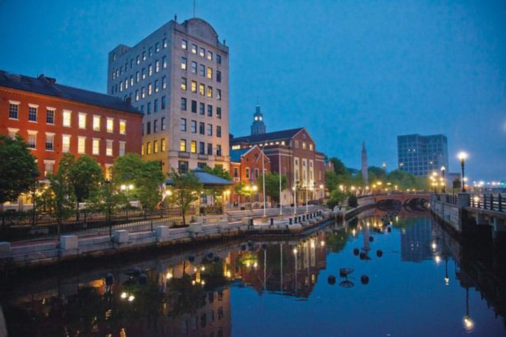
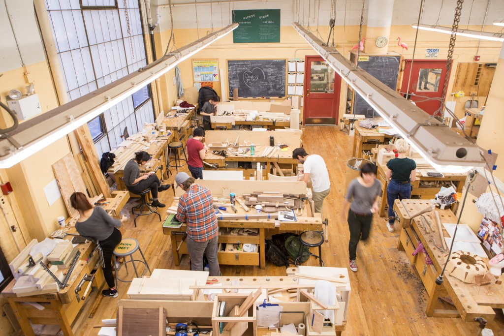

Rhode Island School of Design
- Tuition : 50,960 USD / year
- Status : Private
- Location : Providence, RI, USA
Founded in 1877, Rhode Island School of Design (or “RIZ-dee” for the acronym RISD) is one of the oldest and best-known colleges of art and design in the U.S. Each year approximately 2,300 students from around the world pursue a creative, studio-based education at RISD, which offers rigorous bachelor’s and master’s degree programs in 19 architecture, design, fine arts and art education majors. The college is located in Providence, Rhode Island, which offers its own vibrant art scene and is conveniently located between two other major cultural centers: Boston and New York. From its incorporation on March 22, 1877, Rhode Island School of Design has stood out as a leader in art and design education, attracting extraordinary people who thrive in its creative culture. As one of the first colleges of its kind in the country – founded simultaneously with the RISD Museum of Art – it has always been something of a maverick.
- 
- 
-